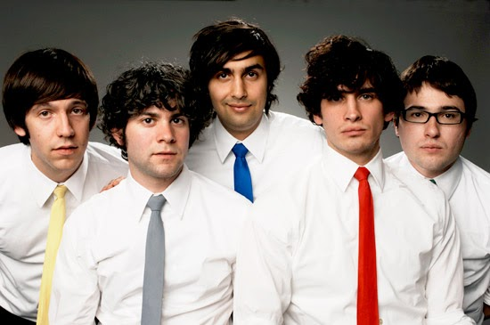

Группа Tally hall
Tally Hall это Американская
рок
группа сформированная в декабре 2002 г. в шт. Мичиган. Группа
известна за свои оживленные и причудливые текста. В группу входят пять
участников, каждый из которых отличается
цветом галстука:
Роб Кантор - вокалист и
гитарист (желтый), Джо Хоули - вокалист и гитарист (красный),
Росс Федерман - барабанщик (серый), Эндрю Горовиц -
вокалист и клавишник (зеленый), Зубин Седги - вокалист и
бассист (синий) 
На текущий момент группа выпустила 7 альбомов:
Partyboobytrap (2003)
Complete Demos (2004)
Welcome to Tally Hall (2004)
The pingry (2005)
Marvin's Marvelous Mechanical Museum (2005)
Good & Evil (2011)
Admittedly Incomplete Demos (2015)